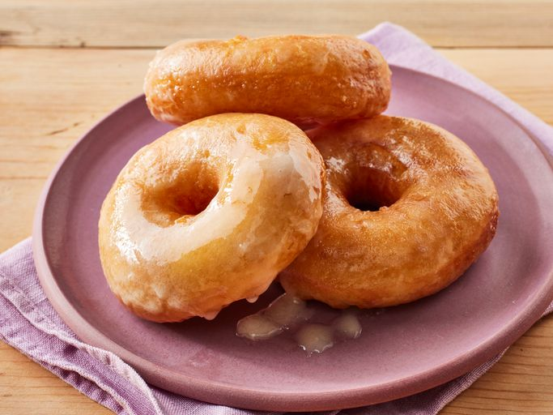

Doughnuts

Description
It's just a doughnut when you buy it from the chainstore doughnut shop. However, when you prepare this yourself, it becomes an elegant pastry. Let's see how we can accomplish this.
Ingredients
- Dry yeast
- Warm water
- Lukewarm milk
- White sugar
- Salt
- Eggs
- Shortening
- All-purpose flour
- Vegetable oil
- Butter
- Confectioners' sugar
- Vanilla
- Hot water
Steps
- Sprinkle the yeast over the warm water, and let stand for 5 minutes, or until foamy.
- n a large bowl, mix together the yeast mixture, milk, sugar, salt, eggs, shortening, and 2 cups of the flour. Mix for a few minutes at low speed, or stirring with a wooden spoon. Beat in remaining flour 1/2 cup at a time, until the dough no longer sticks to the bowl. Knead for about 5 minutes, or until smooth and elastic. Place the dough into a greased bowl, and cover. Set in a warm place to rise until double. Dough is ready if you touch it, and the indention remains.
- Turn the dough out onto a floured surface, and gently roll out to 1/2 inch thickness. Cut with a floured doughnut cutter. Let doughnuts sit out to rise again until double. Cover loosely with a cloth.
- Melt butter in a saucepan over medium heat. Stir in confectioners' sugar and vanilla until smooth. Remove from heat, and stir in hot water one tablespoon at a time until the icing is somewhat thin, but not watery. Set aside.
- Heat oil in a deep-fryer or large heavy skillet to 350 degrees F (175 degrees C). Slide doughnuts into the hot oil using a wide spatula. Turn doughnuts over as they rise to the surface. Fry doughnuts on each side until golden brown. Remove from hot oil, to drain on a wire rack. Dip doughnuts into the glaze while still hot, and set onto wire racks to drain off excess. Keep a cookie sheet or tray under racks for easier clean up.
- Enjoy!
Navigation